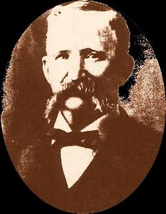

Corporal Sherman Kirk
Fifth Iowa Volunteer Infantry
Fifth Iowa Volunteer Cavalry

Sherman Thomas Kirk was born in October 1840 to Jon and Jean Kirk near Indianapolis, Indiana. He was farming at Port Allen, Iowa when the war broke out. Kirk enlisted on July 16, 1861in Company C of the Fifth Iowa Volunteer Infantry. While serving in the Infantry regiment, Kirk received several promotions, advancing from Seventh Corporal to Second Corporal.
Kirk reenlisted and remustered on January 5, 1864. He was one of the members of the regiment who desired to see the war to its conclusion, who reenlisted to join their comrades in the Fifth Iowa Cavalry in August. During his veteran's furlough in April and May of 1864, he married Lucinda Koons, on May 5, 1864. Following her death on December 24, 1887, he married Marion Brown on May 24, 1890.
Kirk lived a long life, dying of heart disease on March 8, 1921 in Orange County, California. He was buried in Abilene, Kansas the following week.
This veteran biography has been provided by Jeff Daniels, great-great-grandson of Corporal Sherman Thomas Kirk, who has also provided us with a detailed history of the Fifth Iowa Infantry's wartime service.
|
|